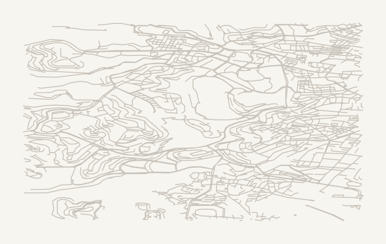

מפת חום - מוקדי דיווחים ברמת רחוב
רחובות עם 4 דיווחים ומעלה בלבד, ברזולוציה מעוגנת
של כ-111 מטר. ספירות בלבד - ללא נתונים גולמיים, לוחיות רישוי או שמות.
הדף סטטי: ללא סקריפטים וללא גורמים חיצוניים.
חזרה לדף הראשי

הרב חיים ברלין / חרלפ: 320 דיווחים הפורצים: 246 דיווחים הפלמח: 50 דיווחים כובשי קטמון: 28 דיווחים בוסתנאי: 19 דיווחים גנרל פייר קניג: 17 דיווחים דרך עזה: 11 דיווחים פועלי צדק: 10 דיווחים חזקיהו המלך: 7 דיווחים ירמיהו: 7 דיווחים אלעזר המודעי: 6 דיווחים הלה: 6 דיווחים הקבלן: 6 דיווחים שדרות ש"י עגנון: 6 דיווחים אודם: 5 דיווחים איתמר בן אבי: 5 דיווחים בן סרוק: 5 דיווחים יפו: 5 דיווחים 1 הפורצים הפלמח כובשי קטמון בוסתנאי 6 דרך עזה פועלי צדק 9 ירמיהו 11 12 הקבלן 14 אודם איתמר בן אבי 17 יפו דיווחים: 5 - 320 # רחוב דיווחים 1 הרב חיים ברלין / חרלפ 320 2 הפורצים 246 3 הפלמח 50 4 כובשי קטמון 28 5 בוסתנאי 19 6 גנרל פייר קניג 17 7 דרך עזה 11 8 פועלי צדק 10 9 חזקיהו המלך 7 10 ירמיהו 7 11 אלעזר המודעי 6 12 הלה 6 13 הקבלן 6 14 שדרות ש"י עגנון 6 15 אודם 5 16 איתמר בן אבי 5 17 בן סרוק 5 18 יפו 5
רחוב נוסף אחד מעל הסף ללא מיפוי.
נתונים מצטברים בלבד · עודכן: 2026-11-01 16:22 UTC · מפת הרקע: © OpenStreetMap contributors (ODbL)